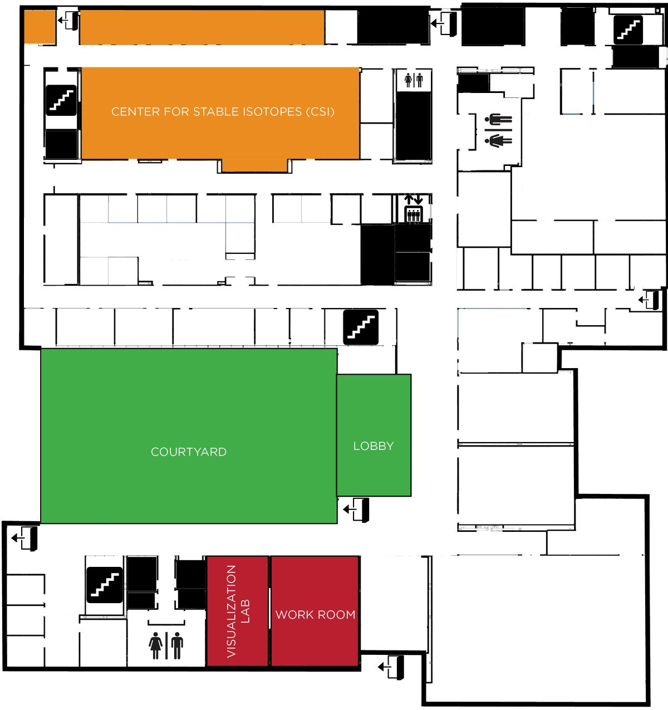

Welcome to the UNM Interdisciplinary Science Cooperative’s Virtual Open House. Until we can safely invite you
into our space within PAÍS we hope that this virtual experience not only teaches you about how our
collaborative is supporting our University’s research mission but also gives you a firsthand look at our state-of-the art facility.
Throughout the month of October, please take time to explore each of our Centers and laboratories, as well as our projects and fellowship.
If you are interested in getting involved in our Team Research Symposium this spring or any of our other upcoming activities, please contact Irene.
CLICK THE TABS BELOW TO TRAVEL THROUGH THE FLOORS OF PAÍS.
ONCE YOU ARE ON YOUR SELECTED
FLOOR, CLICK ON THE COLORED SPACES WITHIN THE FLOOR PLAN TO LEARN MORE ABOUT THEM.